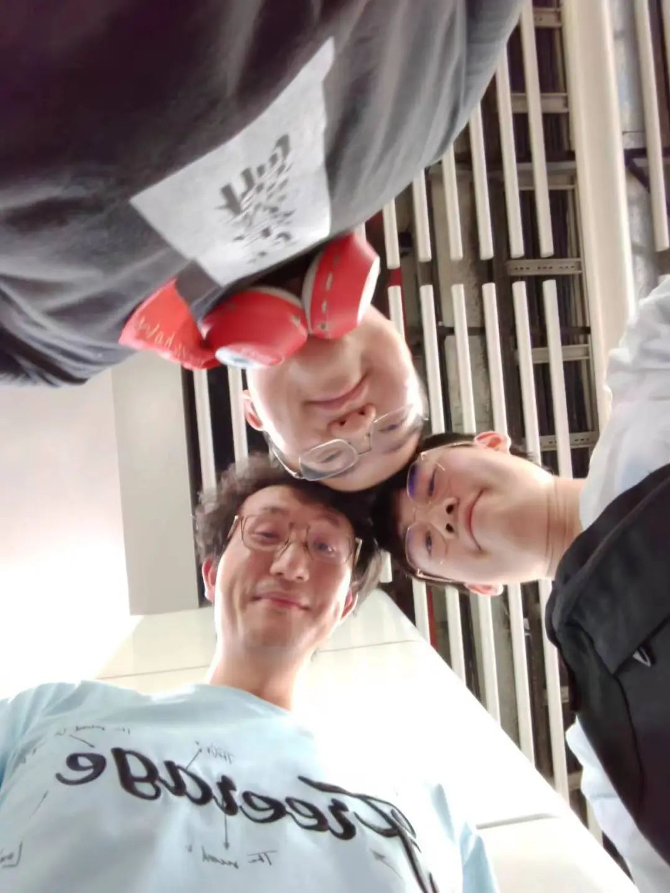
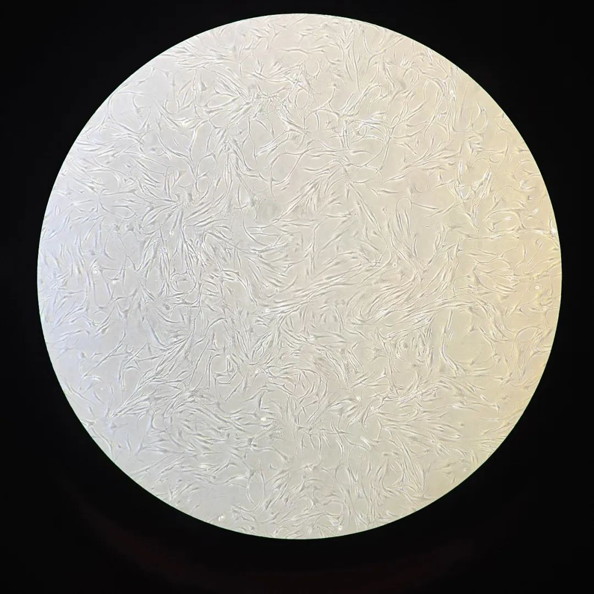

本文是张衔瑜第287篇推文
共计6666个字，共98张图和2个视频
会怎么描述2023年。
这句话不非得是一个问句。我只是表达我的疑惑，并不非得寻求一个答案。有时候人们问问题，是真的有疑惑需要解决。有时候，并没有疑惑，只搞个设问句出来，从而简单地把自己的想法用疑惑来捕获听者。疑惑而不非得想找个答案，有可能是因为我知道答案给得精准 会把我的这些生活具象成几个劣迹斑斑的方块字。倘若反过来，答案飘逸、天马行空，我知道离题万里。又是何必
今年开篇的图来自在实验室拍的一张，修成了Xpan像移轴才拍出来的样子。其实是相机拍完然后把剪刀裁出来。
傍晚拍的。从实验室看出去，能看到Dover杜弗村的全景。近景矮矮的房子是我上半年住了两个月的宿舍Anglo-Chinese Independent School英华自主中学。中景橙黄色彩的是在好朋友家借宿了两个月的组屋。更远的地方能看到一点点山势，应该是武吉知马那一片地方。
刚进入新年那会儿还有些干劲。于是拿着借来馋了很久的理光Ricoh GR3x去拍了拍照。这一张在荷兰村贝果店拍的肖像把环境故事说得很好。
年关将近。受邀去华族文化中心看展。拍了一下暖场的意识流舞蹈表演
小年这一天，和卢姥爷出门听华乐团的演奏会。

演奏会完后，带着相机的两个人从滨海湾一路扫街扫到小印度。看另一种文化里的配色很简单地就会有一种疏离感。今年的五张年度最佳，给一张给这位点灯的小哥。虽然从我现在的心情出发，不一定有多少配得，但是是我作为对于此前追求摄影技术和摄影理念时期的纪念。


腊月里，帮朋友理发的一张照片遗憾没有进入100图，但的确很有纪念意义。于是文字说一下。那是我第一次给人理发。
在恋爱的犀牛的基础上给自己设计了一件衣服，买了一条红色的抹额来，一起作为本命年的准备。重新看当时拍的图，还准备了朱砂。要是说本命年真的不是特别好就是特别差，那我特别怕今年是特别好的一年。因为现在已经知道了今年是什么样，如果今年还是特别好，那很难想象平年会是什么样。
过年，分别在糖-Jacky的家里和柠檬摇玉的家里。都是一大家子人，没有选入纯粹是因为我懒惰。每一位出镜的朋友我其实都会去问一下：今年100图邀请这一张可以吗？但如果一张合照中超过5个人了，对我来说是会有些难办的。
但也的确值得纪念。在前者的家里吃到了很好吃的猪头肉、看到了他们家冰箱上世界各地游完回来买的冰箱贴；在后者家里的钓鱼机上一直钓鱼，快要打起来了于是春晚之后大家打开Switch全场体感游戏开始跳舞。第一次过年过到守岁完了之后五六七八个人在大厅里跳舞开心。是的确没有过的体验。
正月初二。犬火说帮我拍一张亚庇一点的照片。我在想我还能怎么亚，于是她拍我修，就有了这一张。

这段时间歌、舞、剧都看得不少。落日飞车、告五人、香港中乐团、台湾忘记名字的剧作团。因为我也已经过了那个时候了，所以忘记了也是情理之中。就潦草敷衍地带上告五人。

给课题组里的好兄弟彭蕤闻拍了张工作照。他不是华人，也没有中文名。彭蕤闻是我根据他和他原来泰米尔语中的名字发音取的。

作为友好交流，小彭带我和道歌去看了今年的大宝森节。


这是今年的又一张年度最佳前五，意味着今年上半年的松弛感。


福州飞长沙，回了长沙就约女儿水风井见。山林小粒儿顺路带了一串糖油坨坨，一回长沙就感觉变回了油漆工：这里游一游、那里瞧一瞧，长沙方言专门把这种人叫油漆工是有道理的。
也出门干活。就去了一趟苏州。
自费加班总得找点合理的住处，比如背包十年苏州店，就可以看整个姑苏区。
到处走是真的快乐。很多朋友在目的地更加了这份快乐。赤赤在苏州，刚分开不不久的室友也到了苏州，一起合作过的师姐outsider蓝也在苏州。像苏式火锅里的点心，攒一朵花尖。

灵机一动奔袭上海。上海多是好朋友。从交大到虹桥，从静安寺到五角场。和一去静安寺的时候看到所有人都在对高炉上投掷硬币。我手上有马来西亚令吉也有新加坡币，没想到佛祖不收东南亚货币。也许要是南传佛教的盛行地比如泰国泰铢才受用吧。
再回长沙的时候，正是高考时间。和高中同桌信在雅礼周围游荡拍照。同桌试着用我的长焦给光，时钟转一转就像我也还为了理综最后一题在盛夏午后专注得心流。

又跟好基友Ming出门约吃粉蒸肉，他的衣服正和我蟹老板裤子的颜色。所以是我们一起去偷蟹老板的家，他偷衣服，我偷裤子。
不偷蟹老板的时候，我们就去手机店里偷偷用手表拍照。
待在长沙是真的很幸福。和好朋友LRL总有层出不穷的小店探一探

妹妹中考完了就带妹妹去喝丰盈西里当季新酿的荔枝饮料
闲来搓个局去体育馆打德州扑克
也到周边城市比如株洲的古桑洲看一看，看养蚕缫丝和桑葚酒
也去看看非洲进口博览会，看有些什么洋意子

端午到了，外婆早就准备好了姜丝石菖蒲，浏阳河边也有了满船大汉擂鼓划船
在长沙待得怎么会不自在，除非有人非给我来找不痛快。那我等晚上到了，就从走马楼出发去湘江银盆岭大桥下，找这种拿弹弓打靶标的伯伯来教训他们


真正心情自在就去夜爬个岳麓。和枫林路蛋糕杀手在街路边随便买两个冰杯，买两瓶啤酒再买一瓶闭眼摸瞎，随机勾兑一个心情。去河边吹风看晚灯，酒喝好了就对水里一走，酒不好喝就往垃圾桶饲喂。

这是今年的年度最佳，讲明白了今年年中在长沙的松弛感。
我说我博士课题里有3D打印，于是给老爸安排一个3D打印机。两个人支开老妈，花了半个晚上的时间打好了从底座到龙门架的螺丝。我感觉我爸后来应该再也没用过这台3D打印机，不过至少打了半晚上的螺丝，也搞出来了个小船。

长沙的确好玩。晚上才出门，出门就是脆藕、黄喉、黄瓜和毛豆四拼盘。我说各个夜宵烤串店啊，牛油就是评价这里地不地道的最高标准。

随便走走都好玩，都感觉有新鲜东西。看也很难看腻，即使就是我家门前几步路。走远也可以，近也很合理

和道长在湘江一桥油漆工


和阿董在苏家巷油漆工
如果没有豆一岚，可能我生日也不会想着要搓一个局。然后豆老师就在我生日的前一天从横店回了长沙。女儿介绍的这家搞不好火锅真的是笑得人头晕，因为只做一种锅底所以叫搞不好火锅，整个店也只有四张桌子还开在背街。鸭血是世界第一等，外加这次生日瀑布土豆当寿面(得亏Caesar去拿了把剪刀过来
今年100图也有去年的未揭秘，之2022年豆老师生日时在长沙小豆岛我拍的肖像，因为去年截稿前没能联系上豆老师而没有加入。后来小豆岛好像也不再营业了，这一笔富士山草莓看等下次什么时候提供这个中古盘子的山苜老板重出江湖时再联系。

文字引用另一张豆老师在太平街天台上拍的一张我和岳麓山日落。因为今年没有更多slot给我的单人肖像于是没有载入(说抱歉了
八月，也快要离开长沙了。附图是我们最后一次搓局，在林笙的生日。共享小电驴绕过小半个长沙，汇合大部队在天心阁底下，吃顿东安鸡，然后在最经常剧本杀的大事件坐下。细心的叉博士第一个走进去，我们后进来的自己于是带进了自己的小竹编坐垫。



返校之后的生活和在长沙的生活的确不一样。在长沙的生活是这也好玩、那也好玩，我们在好玩的事情里挑着来讲。返校之后就不同了，得找找才能找到好玩的。
和Angel在Bugis探湘香之前

和猪猪侠 Jayden 梦开始的地方 在台球开球前

和竞技体育运动员们在德州扑克.变态版开桌前

S我的超人，在谁面前这段表述都不会改变。图为一次BBQ聚会前，和一次大闸蟹与羊蝎子聚会中。


到坡之后很多能让人回想起来的经历都和朋友们在一起，比如到柠檬摇玉和Yifan家里搞上一顿火锅中秋节。
一个头像是自己戴着墨镜骑马的男人，在一个下雨天成为了一名父亲。
喵哥带来消息，这一天出生了喵宝宝，这张图里的喵妈妈成为了奶奶、另外两位女生成为了姑姑、黑衣男生成为了叔叔。还有重要的，在楼上，我们不可以去探视的喵嫂，成为了妈妈。

这是我第一次见证一个宝宝从还没有出世，我们大家一起帮Ta起名字；到宝宝降生的这一天，到宝宝快百天的时候，我去和宝宝击掌。我身边无论哪个去过这家里的人都说，这是在新加坡见过的最有爱的大家庭。只要是和这家人在一起，就像是给自己充电一样快乐。如果能在这里吃一次饭，一定是留学生活的情绪高光时刻。
在新加坡也自疫情开放后，第一次in-person见到血亲出现在新加坡。哥哥也是疫情三年以来第一次回到亚洲，见到家人。在哥哥的视角下左看看右看看。


新加坡，易聚散。我的两位好朋友，嘎嘎和寿司先后要开始人生的新一阶段了。今天我们在这里，就再一次祝人们捱得到新天地。图为嘎嘎送张衔瑜的鱼毛球，和MD1楼下的背向离开的华服寿司。
返校以来，去了新山好多次。除了吃饭、按摩，也还有ATV全地形车去看一个挖沙形成的堰塞湖

有时候错过了新马往返的边界巴士，就得徒步没有人行道的关口边界。呼啸而过的汽车让人觉得完全没有安全感(笑晕 凭感觉在走

下半年最自在的时刻也在新山短途旅行。这次是在雕门岛/刁曼岛Tioman，一个出海一个小时左右的小岛。
和Hio把脚搭在五米就到海湾的塔楼吊床上。能让人觉得安定的，在等猪猪侠和Jayden相继醒来。周围、四处走走，上山、或者在沙滩上等海浪过的时候，海涛会带走一部分砂石所以感觉就好像自己在一次又一次的海浪卷席中渐渐下沉。
让海岛把所有在新加坡的急躁全都用海浪冲洗掉。


之所以会越来越需要自然的平抚，是因为实验越来越紧张。从干实验室的计算，到湿实验室的细胞，从返校开始就已经知道不会再有空闲的时间给我了。能出来在刁曼岛短途旅行，在新山吃吃饭开开车，就已经是例外了。图为人上皮成纤维细胞

一些照顾自己的瞬间：新到的杯子、山药玉米葛根粉和腌制渐变知夏轴机械键盘、速冻饺子加上腐乳酱


但也没有那么绝对
圣诞节，和Hio一起出演宇宙探索编辑部
在滨海湾附近的巴士上
[ 有行车声音，请注意调整音量 ]
清行李就是大修为。在一个子夜急火攻心，开始清行李。半年以来，从奇怪而离谱的花衬衫、到带着slogan可以把心情穿在字上的文化衫、到只有纯色的正T，现在我在实验室已经周内只穿黑色、周末看心情。
给衣服抽真空，相当于把穿这件衣服的时间和那段时间发生的事一起抽真空了，放进冥想盆。
等到时刻，再打开。
也可能就不打开了。
整理每年的一百图也是这样。
我也会去翻往年的100图。有时候会想着，去年和今年有什么区别，前年经常去的楼顶，今年有再去过吗？久而久之，会发现有些内容反复出现、有些想法只是飘过，有的部分在以往某个时候留下痕迹，但留存下来的 大多只是刻舟求剑。毕竟舟将行、水将流。最是时间留不住，于是声音碎片乐队里的小军鼓只为了《送流水》这首歌而演奏。
每年的100图写完之后，除了邀请每一位出镜过的朋友都审阅一下自己的照片，此外也会找没有出镜但是出现过的朋友来看一看。看一看的同时，我也会问：如果你今年选择100图，或者不一定是这个数量，总之你选一选你的年度最能代表自己的图片你会选什么？如上所示，我今年的主题是想追求松弛感，你的主题是什么？
向日葵和我一起在宿舍楼下吃石锅肉拌饭，一边吃一边找今年自己做了什么。他拿出了很多很多的小动物：猴子、海龟、走地鸡、吗喽，配上了用自己不多能读写的中文字做成的祖辈很喜欢的表情包。我把他年度图的动物篇发给我们的共同好友，共友回了我一个图层贴得很好的问号可达鸭。
有些图我留着后门在。毕竟100图对于不熟的人来说，有的也就是读了一张图而已。但其实包括一些文字引用的地方，每年能想起来的事情很多，每一件一件的事，都成为了每一年的一部分。
譬如我家楼下快递店的老板，同时经营着小卖部。没有在我任何一年的100图中出现过，但我每次有什么要买的东西，都会绕着路去他们家买。是时时刻刻都在笑的一家人，不是职业微笑。所以有什么刚拆开的快递，如果是能分的，也会分一点给他们。今年有一张没有入选的图，同样是我的单人肖像，五月中被辣条“缺牙齿”辣到到处叫个不停。也给了两包给这家快递店的老板（笑）之前经常印明信片和买各种小玩意比如孔明灯之类的东西也有好多
总之不是所有的瞬间都提到了，也不是所有的人都提到了。有些后门只有我知道，我写细节如果我不说 也很难注意：入选了的那张夹在路边报废烂车和“长沙今日宜”之间的那只小狗，它的头上长出了像鹿角一样的两小搓毛，看起来就像是生出来了麋鹿的鹿茸一样。这是在我今年农历生日那天遇到的。
不是每张图都有后门，所以也不存在对每个瞬间都过度解读。当只有我知道度在那里的时候，这篇一百图才成为了我的一百图。是我对这一年的特征工程，自然也就有了每个读这篇一百图的人，不同的想法。不管如何，希望每年都能是精彩的一年。平淡生活里有惊喜，平淡生活里有惊吓。跌宕起伏的过程中能喘息片刻，那些我之所以成为我的瞬间可以由清醒的大脑处理。在这之上，对身边和远处有一些微小的贡献，一年就不会称作不值得。
2023年12月29日
于新加坡肯特岗